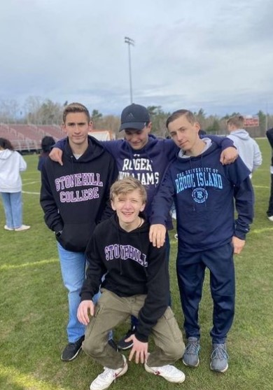
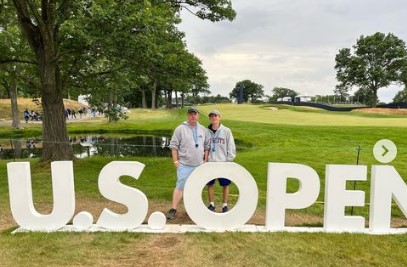
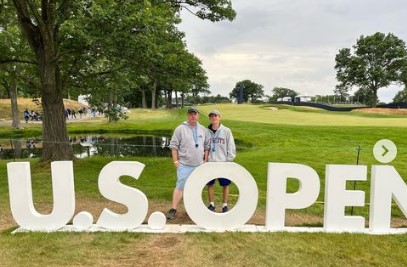

My name is Ethan Scully.
I am a student at the University of Rhode Island.
I am from Mattapoisett, Massachusetts. I graduated from Old Rochester Regional High School in 2022.
I am an undeclared major at URI. I enjoy playing golf and tennis in my free time, as well as rock
climbing and go-karting. I am a very big Boston sports fan, especially the Patriots and Celtics.
I played golf and tennis in high school, and was a captain of the tennis team my senior year.



 
